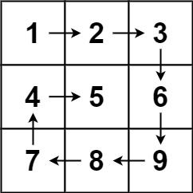
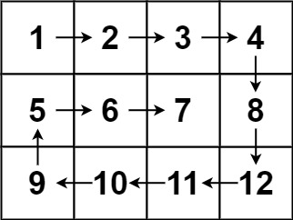

54. 螺旋矩阵
题目与约束
给你一个 m 行 n 列的矩阵 matrix ，请按照 顺时针螺旋顺序 ，返回矩阵中的所有元素。
示例 1：

输入：matrix = [[1,2,3],[4,5,6],[7,8,9]]
输出：[1,2,3,6,9,8,7,4,5]
示例 2：

输入：matrix = [[1,2,3,4],[5,6,7,8],[9,10,11,12]]
输出：[1,2,3,4,8,12,11,10,9,5,6,7]
提示：
m == matrix.lengthn == matrix[i].length1 <= m, n <= 10-100 <= matrix[i][j] <= 100
Java 完整推导
Java 核心不变量
走完一条边立刻收缩对应边界，并防止重复访问。
完整推导
思路推导
-
直觉与痛点（碰壁转向法）：
搞一个二维布尔数组记录走过的位置，然后定义四个方向。一直往前走，如果遇到边界或者走过的格子，就右转（改变方向）。
痛点：需要额外的 O(M × N) 空间来记录是否访问过，且方向控制代码写起来比较繁琐。
-
破局思路（四边界收缩法 / 剥洋葱）：
我们可以直接定义四个边界：
top（上）、bottom（下）、left（左）、right（右）。螺旋遍历的本质，就是在一圈一圈地“剥洋葱”：
- 向右走：沿着
top边界，从left走到right。走完后，最上面这一行就被剥掉了，top++（上边界下移）。 - 向下走：沿着
right边界，从top走到bottom。走完后，最右边这一列被剥掉，right--（右边界左移）。 - 向左走：沿着
bottom边界，从right走到left。走完后，bottom--（下边界上移）。 - 向上走：沿着
left边界，从bottom走到top。走完后，left++（左边界右移）。
- 向右走：沿着
-
致命陷阱（非正方形的折返跑）：
如果矩阵是 3 行 4 列。当你走完一圈，剩下的可能只有单独的一行或者一列。此时，你执行完“向右走”和“向下走”后，所有的元素其实已经遍历完了。
如果你不加判断直接继续执行“向左走”和“向上走”，指针就会发生“倒退重复遍历”！
解决方案：在执行“向左”和“向上”之前，必须严格检查
top <= bottom和left <= right是否仍然成立。Java 实现
import java.util.ArrayList;
import java.util.List;
class Solution {
public List<Integer> spiralOrder(int[][] matrix) {
List<Integer> res = new ArrayList<>();
if (matrix == null || matrix.length == 0 || matrix[0].length == 0) {
return res;
}
// 1. 定义四个边界
int top = 0;
int bottom = matrix.length - 1;
int left = 0;
int right = matrix[0].length - 1;
// 2. 只要边界还没有错乱（交错），就继续剥洋葱
while (top <= bottom && left <= right) {
// 步骤 1：从左到右，紧贴上边界 top
for (int j = left; j <= right; j++) {
res.add(matrix[top][j]);
}
top++; // 上边界被剥离，向下收缩
// 步骤 2：从上到下，紧贴右边界 right
for (int i = top; i <= bottom; i++) {
res.add(matrix[i][right]);
}
right--; // 右边界被剥离，向左收缩
// 核心防御：必须在向左和向上前，确认当前是否还有有效的行和列！
// 防止在单行或单列的情况下发生逆向重复遍历
if (top <= bottom && left <= right) {
// 步骤 3：从右到左，紧贴下边界 bottom
for (int j = right; j >= left; j--) {
res.add(matrix[bottom][j]);
}
bottom--; // 下边界被剥离，向上收缩
// 步骤 4：从下到上，紧贴左边界 left
for (int i = bottom; i >= top; i--) {
res.add(matrix[i][left]);
}
left++; // 左边界被剥离，向右收缩
}
}
return res;
}
}
复杂度
- 时间复杂度：O(M × N)。矩阵中的每个元素都被且仅被访问了一次。
- 空间复杂度：O(1)。除了作为答案返回的
List之外，只使用了四个整型变量来记录边界。
- 考点延伸：螺旋矩阵 II (LeetCode 59)
- 面试官极其喜欢在你做完这道题后，立马抛出它的兄弟题：“给你一个正整数 n，生成一个包含 1 到 n2 的所有元素，且元素按顺时针顺序螺旋排列的 n × n 正方形矩阵。”
- 思路秒杀：这道题甚至更简单！因为是正方形，连“单行单列防越界”的
if判断都不需要写全。逻辑一模一样，只不过是从读取矩阵res.add(matrix[i][j])变成了写入矩阵matrix[i][j] = num++。
Python 完整推导
四条边逐层剥离
用 top、bottom、left、right 描述尚未访问的矩形。每轮依次读取上边、右边、下边、左边，每读完一条边就收缩对应边界。
矩阵可能只剩一行或一列。读取上边后 top 可能越过 bottom；读取右边后 right 可能越过 left。后两条边必须同时确认仍有有效行和有效列，避免回扫刚访问过的元素。
用 3×4 矩阵走一遍
矩阵为 [[1,2,3,4],[5,6,7,8],[9,10,11,12]]。
- 上边读 1、2、3、4，top 从 0 变成 1。
- 右边从第 1 行读到第 2 行，得到 8、12，right 从 3 变成 2。
- 下边读 11、10、9，bottom 从 2 变成 1。
- 左边读 5，left 从 0 变成 1。
剩下 [[6,7]]：上边读 6、7，top 变成 2；右边从新的 top=2 到 bottom=1 为空，right 从 2 变成 1。此时 top 已大于 bottom，统一保护条件不成立，不再走下边和左边，遍历结束。
最终结果是 [1,2,3,4,8,12,11,10,9,5,6,7]。
Python 实现
参考来源：代码随想录（programmercarl.com）
主解按同题 Java 的四边界收缩方案改写为 Python，并沿用原题来源；不是旧 Python 的按圈左闭右开代码。
from typing import List
class Solution:
def spiralOrder(self, matrix: List[List[int]]) -> List[int]:
if not matrix or not matrix[0]:
return []
top, bottom = 0, len(matrix) - 1
left, right = 0, len(matrix[0]) - 1
answer = []
while top <= bottom and left <= right:
for col in range(left, right + 1):
answer.append(matrix[top][col])
top += 1
for row in range(top, bottom + 1):
answer.append(matrix[row][right])
right -= 1
if top <= bottom and left <= right:
for col in range(right, left - 1, -1):
answer.append(matrix[bottom][col])
bottom -= 1
for row in range(bottom, top - 1, -1):
answer.append(matrix[row][left])
left += 1
return answer
每读完一条边立即收缩
上边读完后 top += 1，右边读完后再 right -= 1。下边和左边使用的是更新后的 top、right、bottom。
单列为什么停止
[[1],[2],[3]] 先读上边 1，top=1；再读右列 2、3，right=-1。随后 top <= bottom 仍成立，但 left <= right 已经不成立，所以组合保护条件为假，循环退出。这里结束的原因是列边界越过，并非上边更新后立刻出现了 top > bottom。
统一保护条件
把下边和左边放进同一个 top <= bottom and left <= right 分支，只有当剩余矩形至少有一行且至少有一列时才继续。这样既防止单行回扫，也避免在空矩形上执行无意义的边界更新。
复杂度
- 时间复杂度：
O(mn)。 - 空间复杂度：
O(1)（不含输出）。
每个矩阵单元恰好加入答案一次，时间 O(mn)；除输出外只保存四个边界。
力扣原题
C++ 实现
实现来源：代码随想录（programmercarl.com）
class Solution {
public:
vector<int> spiralOrder(vector<vector<int>>& matrix) {
if (matrix.size() == 0 || matrix[0].size() == 0)
return {};
int rows = matrix.size(), columns = matrix[0].size();
int total = rows * columns;
vector<int> res(total); // 使用vector定义一个一维数组存放结果
int startx = 0, starty = 0; // 定义每循环一个圈的起始位置
int loop = min(rows, columns) / 2;
// 本题的loop计算与59.螺旋矩阵II算法略微差异，因为存在rows和columns两个维度，可自行分析，loop只能取min(rows, columns)，例如rows = 5, columns = 7，那loop = 5 / 7 = 2
int mid = min(rows, columns) / 2;
// 1、同样的原理，本题的mid计算也存在上述差异；
// 2、
//如果min(rows, columns)为偶数，则不需要在最后单独考虑矩阵最中间位置的赋值
//如果min(rows, columns)为奇数，则矩阵最中间位置不只是[mid][mid],而是会留下来一个特殊的中间行或者中间列，具体是中间行还是中间列，要看rows和columns的大小，如果rows > columns,则是中间列，相反，则是中间行
//相信这一点不好理解，建议自行画图理解
int count = 0;// 用来给矩阵中每一个空格赋值
int offset = 1;// 每一圈循环，需要控制每一条边遍历的长度
int i,j;
while (loop --) {
i = startx;
j = starty;
// 下面开始的四个for就是模拟转了一圈
// 模拟填充上行从左到右(左闭右开)
for (j = starty; j < starty + columns - offset; j++) {
res[count++] = matrix[startx][j];
}
// 模拟填充右列从上到下(左闭右开)
for (i = startx; i < startx + rows - offset; i++) {
res[count++] = matrix[i][j];
}
// 模拟填充下行从右到左(左闭右开)
for (; j > starty; j--) {
res[count++] = matrix[i][j];
}
// 模拟填充左列从下到上(左闭右开)
for (; i > startx; i--) {
res[count++] = matrix[i][starty];
}
// 第二圈开始的时候，起始位置要各自加1， 例如：第一圈起始位置是(0, 0)，第二圈起始位置是(1, 1)
startx++;
starty++;
// offset 控制每一圈里每一条边遍历的长度
offset += 2;
}
// 如果min(rows, columns)为奇数的话，需要单独给矩阵最中间的位置赋值
if (min(rows, columns) % 2) {
if(rows > columns){
for (int i = mid; i < mid + rows - columns + 1; ++i) {
res[count++] = matrix[i][mid];
}
} else {
for (int i = mid; i < mid + columns - rows + 1; ++i) {
res[count++] = matrix[mid][i];
}
}
}
return res;
}
};
Go 实现
实现来源：代码随想录（programmercarl.com）
func spiralOrder(matrix [][]int) []int {
rows := len(matrix)
if rows == 0 {
return []int{}
}
columns := len(matrix[0])
if columns == 0 {
return []int{}
}
res := make([]int, rows * columns)
startx, starty := 0, 0 // 定义每循环一个圈的起始位置
loop := min(rows, columns) / 2
mid := min(rows, columns) / 2
count := 0 // 用来给矩阵中每一个空格赋值
offset := 1 // 每一圈循环，需要控制每一条边遍历的长度
for loop > 0 {
i, j := startx, starty
// 模拟填充上行从左到右(左闭右开)
for ; j < starty + columns - offset; j++ {
res[count] = matrix[startx][j]
count++
}
// 模拟填充右列从上到下(左闭右开)
for ; i < startx + rows - offset; i++ {
res[count] = matrix[i][j]
count++
}
// 模拟填充下行从右到左(左闭右开)
for ; j > starty; j-- {
res[count] = matrix[i][j]
count++
}
// 模拟填充左列从下到上(左闭右开)
for ; i > startx; i-- {
res[count] = matrix[i][starty]
count++
}
// 第二圈开始的时候，起始位置要各自加1， 例如：第一圈起始位置是(0, 0)，第二圈起始位置是(1, 1)
startx++
starty++
// offset 控制每一圈里每一条边遍历的长度
offset += 2
loop--
}
// 如果min(rows, columns)为奇数的话，需要单独给矩阵最中间的位置赋值
if min(rows, columns) % 2 == 1 {
if rows > columns {
for i := mid; i < mid + rows - columns + 1; i++ {
res[count] = matrix[i][mid]
count++
}
} else {
for i := mid; i < mid + columns - rows + 1; i++ {
res[count] = matrix[mid][i]
count++
}
}
}
return res
}
func min(x, y int) int {
if x < y {
return x
}
return y
}